Caribbean Blue
Photo series
A response to the chromatic impulse; the aversion of colour, a mistrust of colour, a fear of contamination or corruption through colour. (Chromophobia - David Batchelor, 2000)
How was colour ever considered something ‘foreign’ and unworthy of serious consideration, when the natural world offers so much?
A journey through place, from land to beyond, shot on 35mm film. Across the open sky, up the highest mountains, down steep cliffs, and out to the endless sea. Colour is neither trivial nor threatening, it is the essence of life itself.
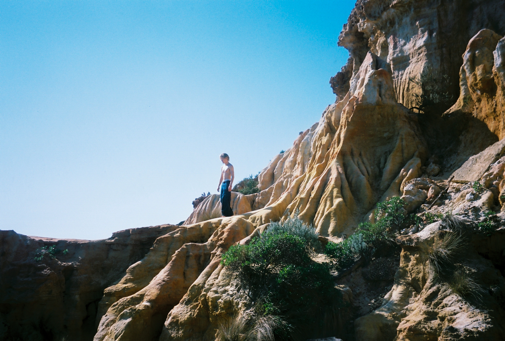

 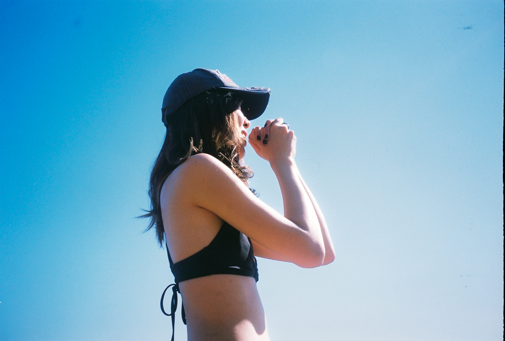
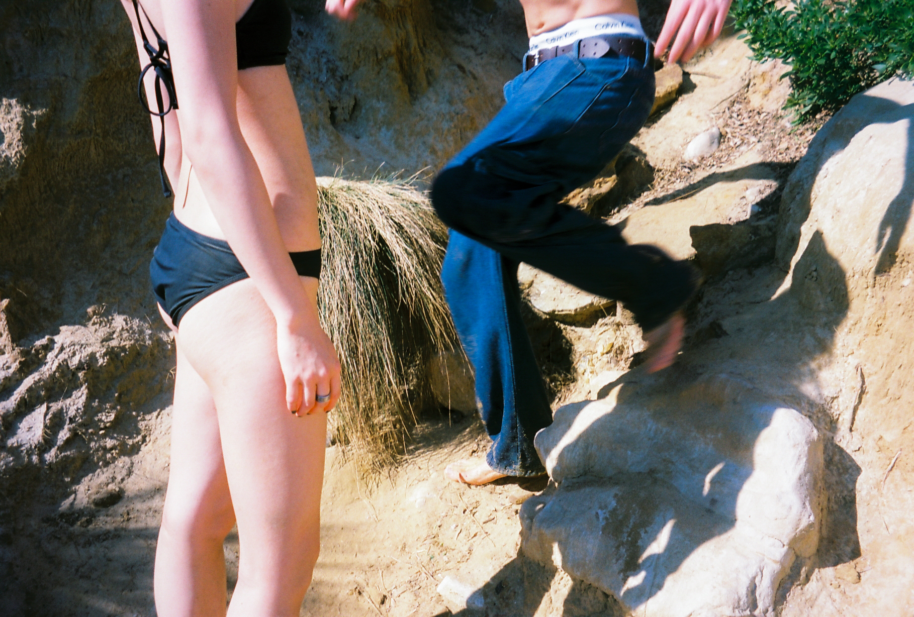
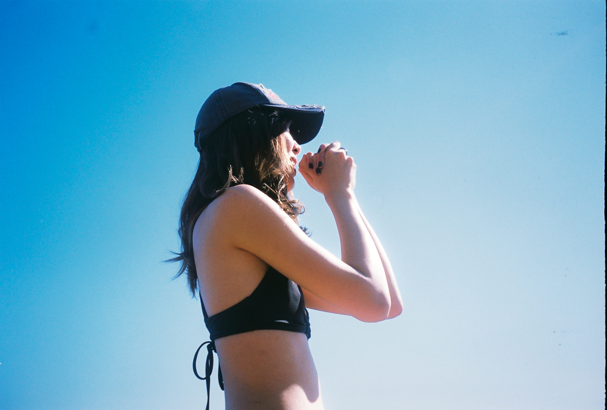
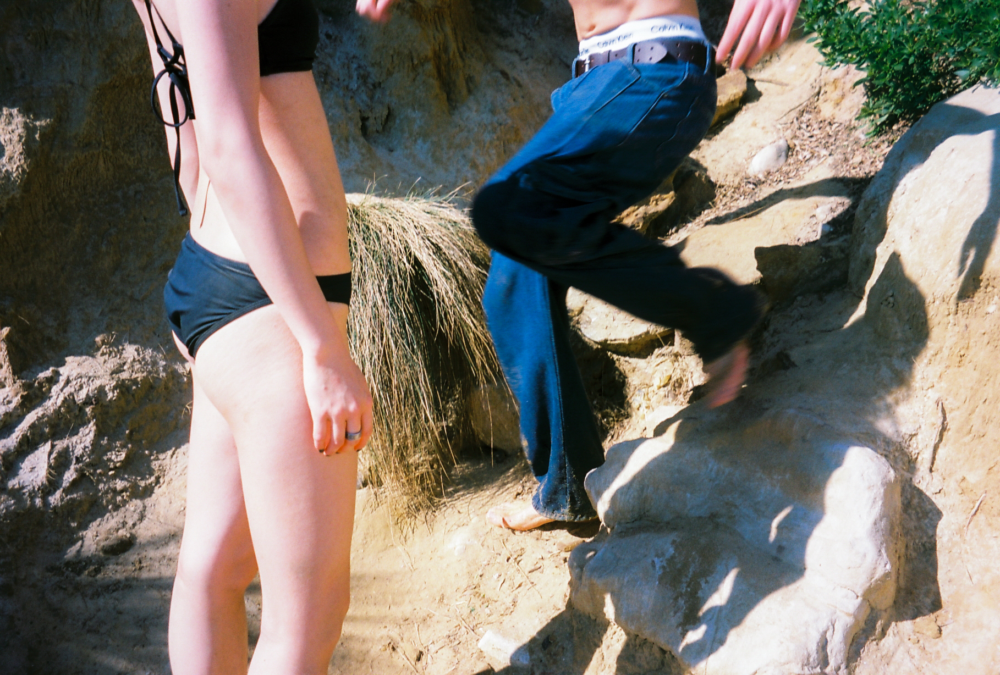

 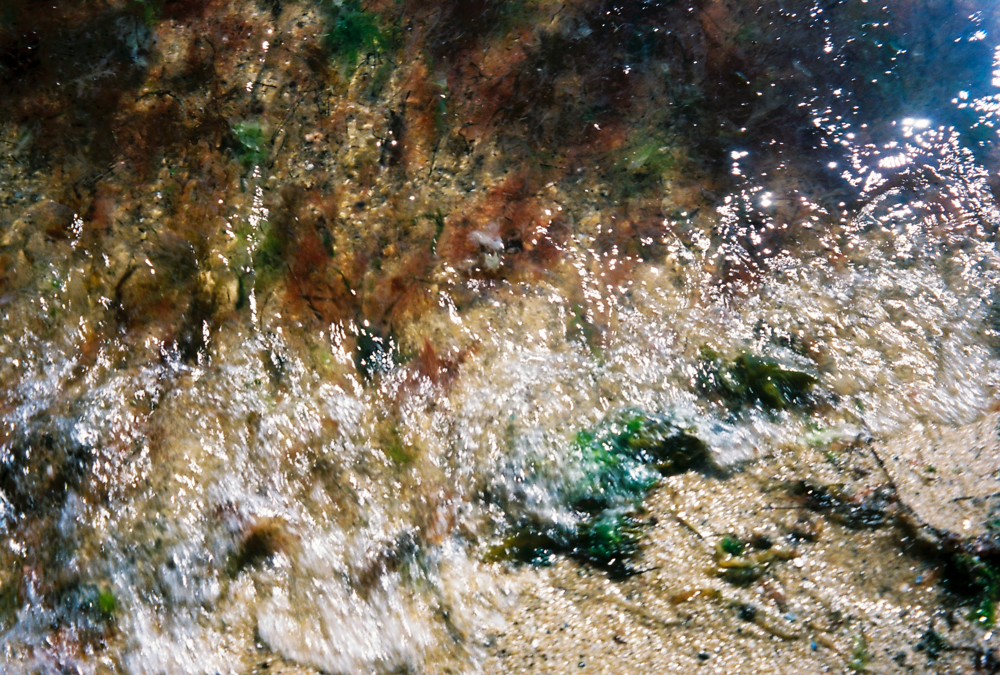
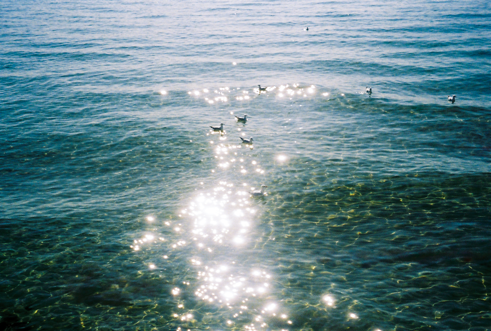
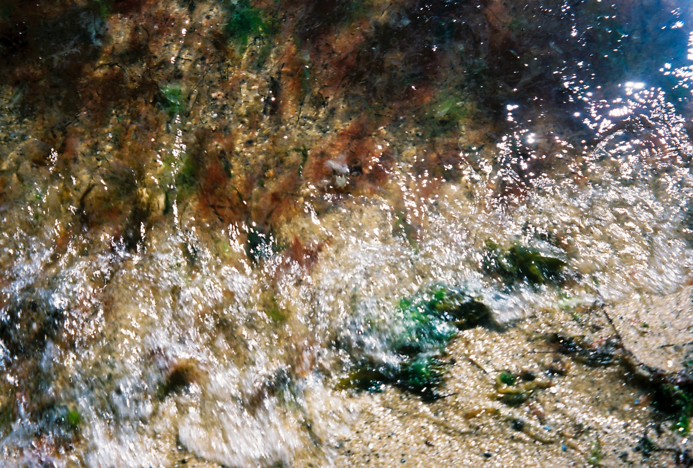
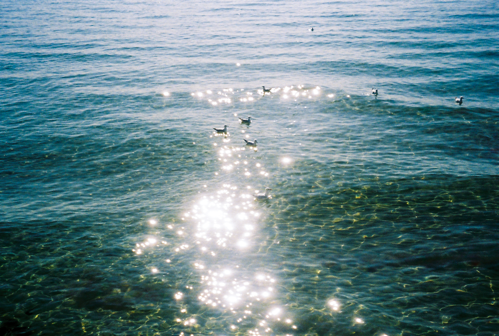
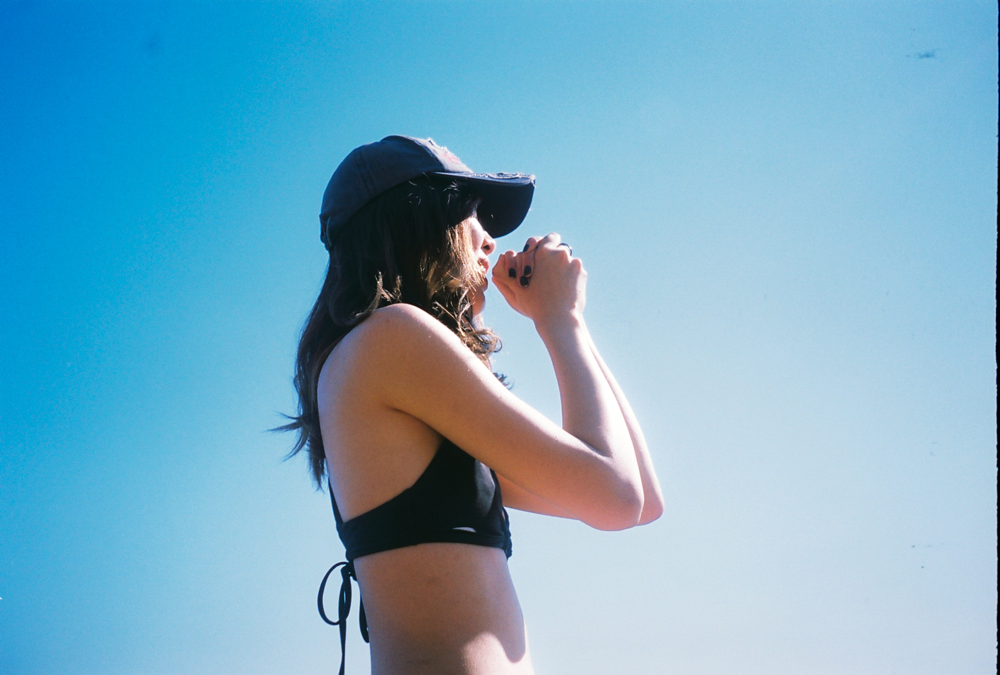
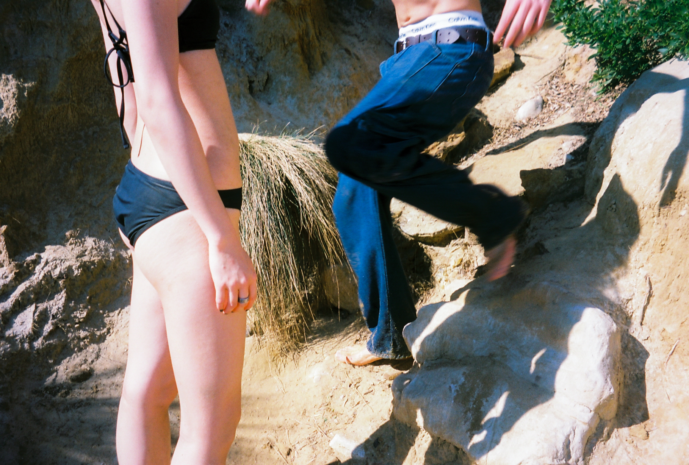
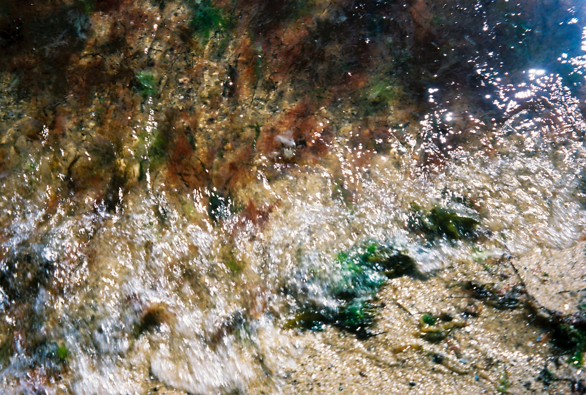
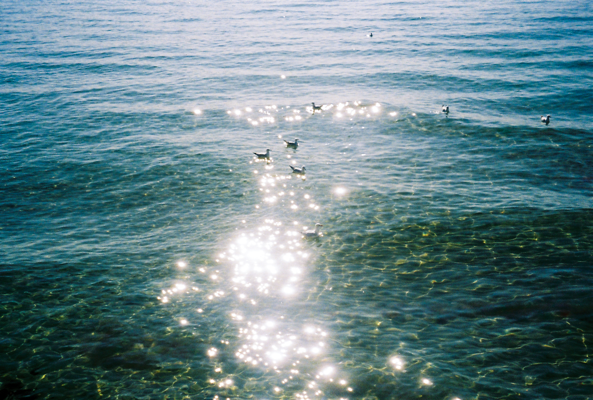